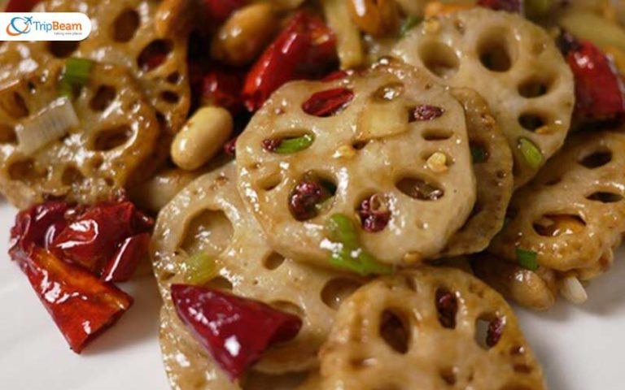

Famous Food
Siddu
Siddu is a mostly loved dish in Himachal Pradesh, made from wheat flour and often served alongside vegetables or mutton with Pure Desi Ghee.
Tudkiya Bhaat

A traditional Himachali pulao with an added dose of lentils, potatoes, yogurt, vegetables like tomatoes, garlic, ginger, onions, and basic spices.
Himachali Dhaam
Dhaam is a traditional Himachali meal that is delicious as well as nutritious.This thali includes rice, Madra, curry, dal, rajma, khatta, and whatnot.
Madra
Prepared with soaked chickpeas, fresh vegetables, and a whole lot of love.
Bhey
Bhey is a traditional Himachal Pradesh dish. It is made using thinly sliced lotus stems. The stems are cooked with besan, onion, ginger, and garlic.
Chha gosht
The marinated lamb is cooked in besan and yogurt gravy.